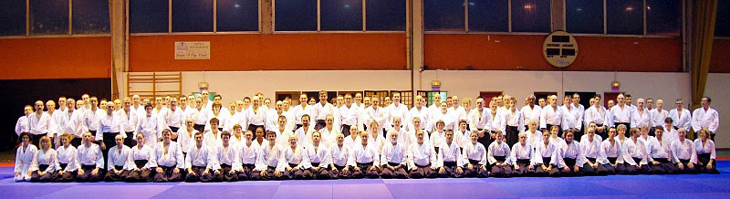
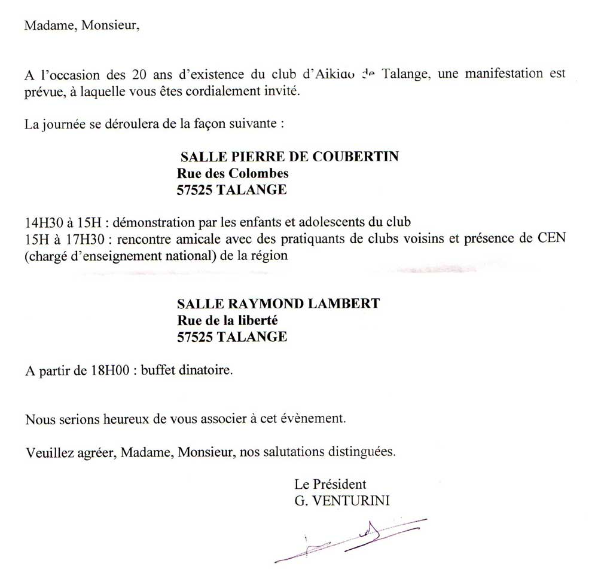

_____________________________________________________
Samedi 03 et dimanche 04 décembre 2011
Stage fédéral à Talange
animé par Gilbert Milliat et Robert DALESSANDRO

Interclubs Mercredi 20 avril 2011 à 19h00 au Dojo de Talange.
Merci de confirmer la participation et l'effectif à André Semin
_____________________________________________________
MANIFESTATION A L'OCCASION DES 20 ANS DU CLUB
SAMEDI 29 MAI 2010
La somme du cours sera reversée à une action caritative. Ce seront les enfants qui choisiront.
Pour le repas : il reste 35 places.
Cliquer sur les images pour agrandir.
_____________________________________________________
INVITATION pour le SAMEDI 29 MAI 2010

_____________________________________________________
Stage des FEMININES
avec Jean-Pierre LAFONT, CEN 5ème dan, et Antoinette LAFONT, 4ème dan,
les 24 et 25 octobre 2009 à TALANGE
Antoinette et Jean-Pierre ont proposé un travail adapté aux féminines, sans force et tout en technique,
un Aïkido vrai comme chacun devrait le pratiquer.
Voir les PHOTOS sous "COMMISSION TECHNIQUE / Stages passés".
{kind=link}
{kind=link}